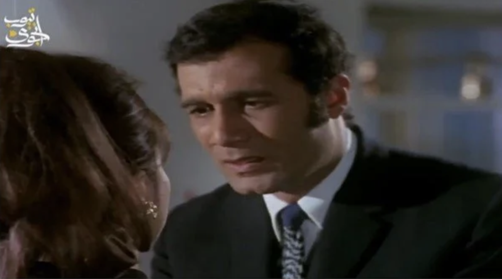

Henry Barakat's Al-Khayt al-Rafea (The Thin Thread, 1971)
Over the past couple of months, as allegations and testimonials of sexual assault and rape have inundated the Egyptian cybersphere, and again questions about women's bodies and their choices took center stage (rightly so), I found myself thinking of the famous scene in Henry Barakat's Al-Khayt al-Rafea (The Thin Thread,1971), where Mona (Faten Hamama) screams at Adel (Mahmoud Yassin) for refusing to acknowledge their relationship publicly, after she had supported him for years till he managed to make something of himself. When he becomes successful, Adel effectively shuns Mona, and the one thing he can offer is to tell her that he "worships her." Men want love, as long as it does not inconvenience them too much, or threaten their social image and reputation.
The film is based on a novella of the same name by Ihsan Abdel Quddous and was adapted to the screen by writer and artist Youssef Francis. According to one source, the novella was actually written in the mid-1950s and first serialized in Abdel Quddous' mother's controversial magazine, Rose al-Youssef. The novella does reflect the politics of time, albeit in a very precursory way, specifically by making the female protagonist — once again, like in Abdel Quddous's 1952 novel Al-Nathara al-Sawdaa (Black Shades) — an expat of European origin (a nod to the so-called pre-1952 revolution cosmopolitanism). It tells the story of Yolond, a Sicilian-Italian bank-teller who ends up as a mistress for the rich and powerful businessman Abdo, and Adel, a legal and economic expert who falls in love with her. Through a series of unfortunate events (Adel ends up being hit by a car after having too much to drink with Yolond and Abdo), Yolond ends up feeling guilty and responsible for Adel, and slowly decides to help him overcome his "limitations," and so their doomed relationship begins.
Abdel Quddous describes the core of his story as "the thin thread between love and the instinct to possess," repeating this phrase three or four times throughout the novella. Yet this particular line does nothing to explain the conflict of the characters, nor does it offer any resolution to the actual problem. The protagonists are not suffering because of their desire to possess, but because one of them believes that women owe him sex, attention and love, and that providing women with money in exchange is a sufficient gesture of commitment. In a society that systemically attacks women for that very same choice — the choice to enter into a relationship with a man outside marriage — the conflict becomes about a lot more than "possession." Attributing it to possessiveness not only misses the point, it also illustrates Abdel Quddous's misguided psychologization of intimate relationships in Egyptian society during the post-independence era. Abdel Quddous's portrayal of love as "something hormonal" — suppressed erotics, if you will — reflects a certain kind of adolescence prevalent in modern Arab literature, one that still persists in many ways. The author's entire career can be summed up as an attempt to transform a liberal bourgeois conception of sexuality into a meaningful psychological archetype, premised mainly on that particular idea of love as suppressed sexual desire disguised as romance, to the ruin and detriment of everyone involved. Not least because such a perception of love ties romance and women to a strict notion of "property," which explains Abdel Quddous's obsession with qualifying love as the desire to possess rather than the recognition of value and the bestowal of care.
In her article "Yes means Yes: Questions of Sex, Pleasure and Harm," law professor Lama Abo Oudeh talks about two strands of feminism, one that focuses on the harm implicit in most sexual relationships as they stand within a specific social setting and their exploitative nature to women, and another one that is more sex-positive and libertarian in nature. Abo Oudeh says the tension between those two impulses — protecting women from the sanctioned power inequalities in a larger social context and emancipating them from the constraints that deny them agency over their bodies and sexualities — is what characterizes most feminist debates at the moment, as instigated by movements like #MeToo.
Ihsan Abdel Quddous would fall within that second camp: a libertarian, seemingly sex-positive intellectual who — under the guise of emancipation — actually places all the burden on women, in effect only highlighting the fact that a woman can never win. Women can neither get protection from a society that sees them as lesser than, nor fight and reach a certain kind of autonomy for their choices. Abdel Quddous is probably the best example of the deeply conflicted attitudes towards sexuality that still exist among Arab intellectual circles today: men who want women to be "free" — i.e. make themselves sexually available for them — and at the same time leave those women to bear the full consequences of such availability (from rape and assault to honor killings to six years in prison for prostitution) alone. Many of those men have no qualms writing about women's liberation and sleeping with women outside of wedlock, knowing that the fulfillment of their desires will most likely mean the death or legal prosecution of these women (never of men of course, because no one prosecutes men for "sexual transgressions," except maybe after assaulting and raping close to a hundred women).

Still from The Thin Thread
Under Barakat's direction and Francis' script treatment, Adel is transformed from an ugly dwarf dabbling with legal and economic policy, to an aspiring architect who is shy and reserved yet urbane and romantic. The change of profession is not just for glamorous effect; it ties to the construction boom of the 1970s which allows Adel to have a promising career in the nascent Gulf states. It also allows Mona's support to have a substantial effect, establishing an office, providing contacts, and even giving aesthetic advice as someone who is involved in the world of business and construction. The change of the political environment and the profile of the character (from a European expat to an Egyptian middle-class woman) also removes the tension between the European vs. local dichotomy and instead looks at the social hypocrisy of Egyptian society towards women.
By making the protagonist an Egyptian woman, the film allows Mona to contend with this social hypocrisy and to contrast it with what might be expected of a woman her age and of her same social class. The film, unlike the novella, allows this tension to unfold through a series of confrontations between the two protagonists and the society around them. The issue then is not just how possessive Mona (or Yolond in the novella) is, but rather whether she has a real claim on Adel as his lover and mistress. And it is to Barakat's credit that he allows that tension to come to the fore onscreen, heightening the dramatic effect of being socially stigmatized and excluded.
Not because it's an exceptionally good story or because Barakat directed a masterpiece (the film, too, leaves a lot to be desired), but because Hamama, by playing that role, started a phase of her career where she was more socially conscious of what it means to be a woman in a society like ours. This is when she made socially engaged films like Orido Hallan (I Want a Solution, 1975), Afwah wa Araneb (Mouths and Rabbits, 1977) and Hikaya wara Kol Bab (A Story Behind Each Door, 1979). In those films she gets angry, cries, screams, plots, schemes and does things that can land her in prison. In a rare moment in The Thin Thread she even calls her lover disparaging curse-words. Nothing about Mona is pristine — according to the moral compass of Egyptian society, which is always hypocritical and crushingly cruel when it comes to women and their choices. First, she is ostracized for agreeing to be her boss's mistress (out of the need for financial support), then for choosing her own lover, and in both cases for practicing that right outside the purview of what is deemed as a proper, socially-sanctioned romantic or intimate relationship.
The film is more of a one-woman show, where Hamama's skill shines amidst otherwise lukewarm performances. Even when she is not on screen, everyone is still thinking about Mona — a testament, also, to the cleverness of Barakat and the uniqueness of his long-time collaboration with Hamama; the chemistry between both artists. Although not exactly a feminist, Barakat managed to imbue his representation of women with a rare sensitivity that Hamama used very well. And in a story like The Thin Thread, that sensitivity saved the story from being crushed by the weight of its original premise and characters, as problematic as they are.
The 1970s were the golden age of Egyptian B movies, and 1971 was a peak of sorts, with the release of the notorious Sayidat al-Aqmar al-Sawdaa (Lady of the Black Moons), a soft-core pornographic film produced in Beirut with a largely Egyptian cast. And even though The Thin Thread brims with the decadence that characterized the era's cinematic productions (there is more whiskey drunk here than in all of Hamama's films combined), it remains remarkably relevant. Hamama's Mona — with her unfiltered disgust, outrage and bitterness — provides a rare and realistic portrayal of the frustration experienced by women in a society like ours. The thin thread is not between love and possessiveness; rather, it is a metaphor for the illusion that being sexually available for men — in a context of systemic and structural inequality — can mean emancipation for women. The truth is, this perception of "liberation" is still often manipulated, through the same age-old misogynistic tactics, allowing men to get away with murder — literally — and laying all the burden of social oppression and hypocrisy on women. It is a sad state of affairs that has shockingly remained unchanged since the film was released, almost half a century ago.
Still from The Thin Thread
Translation of the scene:
Adel: You have to understand that there are norms and traditions we have to consider.
Mona: Now you speak of norms and traditions? Where were these traditions in the past?
Adel: They were always there.
Mona: And what made you open your eyes to them today?
Adel: The society we live in!
Mona: Then it's my mistake, I took you to this society and I introduced you to those people.
Adel: People never acknowledged us together.
Mona: But they acknowledged you alone, right? It's a cowardly society that you can impose your will on, if you were strong.
Adel: I cannot impose my sins on people.
Mona: People are all full of mistakes.
Adel: But they hide them!
Mona: Only the weak hide their mistakes.
Adel: So you mean that I am weak?
Mona: And I am your sin?
Adel: Our love is our sin.
Mona: Then let's fix that mistake, let's get married.
Adel: [silence, then hesitating] But.. but..
Mona: Shut up! Don't say another word! I am the one who will refuse to marry you! I am the one who will refuse to marry someone as weak as you are! Even if you get down on your knees and beg me!
Adel: Mona, don't destroy everything, I love you! I never want to leave you ever! I can't ever leave you! We should get married but I am afraid that our marriage might be against our interests.
Mona: You mean your own interests!
Adel: Never, Mona, both our interests. What difference will it make, if we continue living as we are, what would it change in the nature of our love, if we keep it hidden? Think about the position that I have reached, Mona.
Mona: The position you reached, is thanks to me, and now you think I am asking too much to share it with you?
Adel: No, Mona, you built me up, you made me, you've made of me this successful person, and for the sake of that person that you created, you should safeguard him and maintain him.
Mona: And I? What do I get?
Adel: The creator gives but does not take, it's enough for a creator that his people worship him, and I worship you.
Mona: The creator asks the people to worship him in the open, and you worship me in secret.
Adel: Worship in secrecy is the most devout form of worship.
Mona: Worship is not a sin. And you consider your love for me a sin.
Adel: It's not me, it's society. A society of infidels, none of them believes in you but me.
Mona: Be a prophet, and go public with your call.
Adel: I cannot be a prophet.
Mona: And who told you I can be a god!
Adel: Please, Mona, don't destroy everything we built in a moment of rage.
Mona: It's true, we used to build together, but now you are destroying alone.